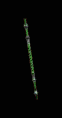

|

禍根之灰
短棍
Bane Ash
Short Staff
|
雙手傷害: 1 -
(7-8)
(變動) (平均傷害4)
等級需求: 5
耐久度: 20
武器基本速度: [-10]
+50-60% 增強傷害
(變動)
150% 對不死系生物傷害
20% 增加攻擊速度
+30 法力
火焰抵抗 +50%
增加 4-6 火焰傷害
+5 火彈 (限法師)
+2 暖氣 (限法師)
|
|

海蛇之王
長棍
Serpent Lord
Long Staff
|
雙手傷害:
2 - (10-11)
(變動) (平均傷害6)
等級需求: 9
耐久度: 30
武器基本速度: [0]
+30-40% 增強傷害
(變動)
150% 對不死系生物傷害
+12 毒素傷害持續3秒
100% 偷取法力
-50% 目標防禦
+10 法力
毒素抵抗 +50%
-1 照亮範圍
|
|

拉撒羅斯之螺旋
多節棍
Spire of Lazarus
Gnarled Staff
|
雙手傷害: 4 - 12
(平均傷害8)
等級需求: 18
耐久度: 35
武器基本速度: [10]
150% 對不死系生物傷害
增加 1-28 閃電傷害
+1 法師技能等級
+2 閃電
(限法師)
+1 連鎖閃電
(限法師)
+3 靜態力場 (限法師)
法力重生 43%
+15 精力
傷害減少 5
閃電抵抗 +75%
|
|

火精靈
戰鬥法杖
The Salamander
Battle Staff
|
雙手傷害: 6 - 13
(平均傷害9)
等級需求: 21
耐久度: 40
武器基本速度: [0]
150% 對不死系生物傷害
增加 15-32 火焰傷害
火焰抵抗 +30%
+2 火焰技能
+3 暖氣
(限法師)
+2 火球
(限法師)
+1 火牆
(限法師)
|
|

鐵檢棒
巨戰法杖
The Iron Jang Bong
War Staff
|
雙手傷害:
24 - 56 (平均傷害40)
等級需求: 28
耐久度: 50
武器基本速度: [20]
+100% 增強傷害
150% 對不死系生物傷害
50% 額外的攻擊準確率加成
20% 高速施法速度
+2 法師技能等級
+3 霜之新星
(限法師)
+2 織烈之徑
(限法師)
+2 新星
(限法師)
+30 防禦 |